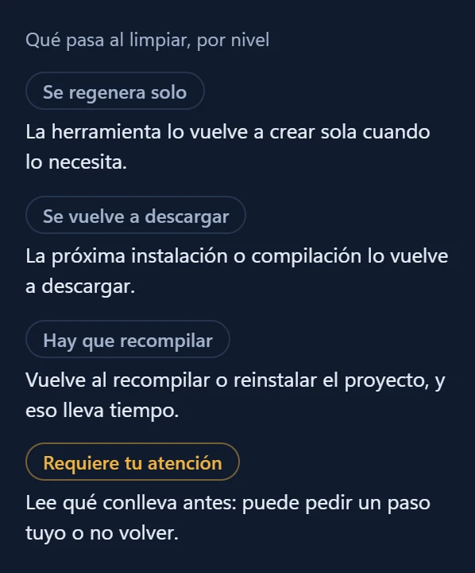
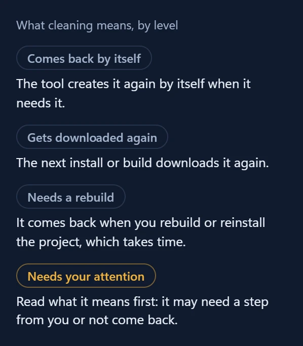

Limpia lo que vuelve,
y se niega ante la duda.It cleans what comes back,
and refuses when in doubt.
Limpyrid borra de forma definitiva, así que está hecha para que sepas qué pasa antes de borrar y para no ofrecerte lo que podrías echar de menos.Limpyrid deletes for good, so it is built to tell you what happens before you delete and to never offer what you might miss.
Cómo funciona: tres pasos.How it works: three steps.
-
EscaneaScan
Eliges una unidad o una carpeta. Limpyrid mide cada carpeta y reconoce las cachés de las herramientas que conoce. Escanear no borra nada.You pick a drive or a folder. Limpyrid sizes every folder and recognises the caches of the tools it knows. Scanning deletes nothing.
-
MarcaTick
Por grupo, por nivel de consecuencia o fila a fila. La barra de abajo dice siempre cuánto llevas marcado y cómo quedaría el disco.By group, by consequence level or row by row. The bar at the bottom always shows how much you have ticked and how the disk would end up.
-
ConfirmaConfirm
Cada limpieza pasa por una confirmación con la lista completa. Al terminar, un informe dice qué se limpió y qué no, elemento por elemento.Every cleanup goes through a confirmation with the full list. When it ends, a report says what was cleaned and what was not, item by item.


Tres paneles: los grupos a la izquierda, las filas en el centro y el detalle de la fila enfocada a la derecha. Abajo, el disco de ejemplo pasaría de 79,2 GB libres a hasta 91,7 GB.Three panes: groups on the left, rows in the middle and the detail of the focused row on the right. At the bottom, the sample disk would go from 79.2 GB free to up to 91.7 GB.


La lista de lo marcado se abre desde cualquier pantalla, con la consecuencia de cada entrada y un botón para quitarla.The selection list opens from any screen, with the consequence of each entry and a button to remove it.


Antes de la primera acción que borra, la app muestra sus términos de uso y pide aceptarlos.Before the first action that deletes, the app shows its terms of use and asks you to accept them.
Cada fila dice qué te cuesta limpiarla.Every row says what cleaning it costs you.
Cuatro niveles de consecuencia, escritos con palabras y no solo con color.Four consequence levels, written in words and not just in colour.
- Se regenera soloComes back by itself
- La herramienta lo vuelve a crear sola cuando lo necesita. Se marca con una casilla desde Inicio.The tool creates it again by itself when it needs it. One checkbox on Home ticks it.
- Se vuelve a descargarGets downloaded again
- La próxima instalación o compilación lo vuelve a descargar: necesita conexión y tarda más. También se marca con una casilla.The next install or build downloads it again: it needs a connection and takes longer. One checkbox ticks it too.
- Hay que recompilarNeeds a rebuild
- Vuelve al recompilar o reinstalar el proyecto, y eso lleva tiempo. Se revisa proyecto a proyecto, y puedes marcar solo los inactivos desde hace 30, 90 o 180 días.It comes back when you rebuild or reinstall the project, which takes time. You review it project by project, and you can tick only those inactive for 30, 90 or 180 days.
- Requiere tu atenciónNeeds your attention
- Puede pedir un paso tuyo o no volver. Ninguna casilla de grupo ni de nivel lo marca: se lee qué conlleva y se marca a mano.It may need a step from you or not come back. No group or level checkbox ticks it: you read what it means and tick it by hand.


Qué reconoce: 22 grupos de herramientas.What it knows: 22 groups of tools.
Cada ruta del catálogo lleva anotada la fuente que la confirma. Lo que guarda datos tuyos solo se muestra: no se ofrece limpiar.Every path in the catalogue is annotated with the source that confirms it. Whatever holds your data is only shown: cleaning it is not offered.
SistemaSystem
Los temporales de tu usuario y de Windows: solo lo que no cambió en el plazo que elijas.Your user’s and Windows’ temp folders: only what has not changed within the age you choose.
Node.js
Cachés de npm, pnpm, Yarn, Bun y Deno, navegadores de Playwright, y las carpetas
node_modules,.nexty.nuxtde tus proyectos.npm, pnpm, Yarn, Bun and Deno caches, Playwright browsers, and your projects’node_modules,.nextand.nuxtfolders.Python
Cachés de pip, uv y Poetry, entornos virtuales,
__pycache__y.pytest_cache. Lo que instaló uv solo se muestra.pip, uv and Poetry caches, virtual environments,__pycache__and.pytest_cache. What uv installed is only shown.Go
La caché de compilación y la de módulos.The build cache and the module cache.
Rust
El registro y las dependencias git de cargo, y las carpetas
targetde tus proyectos.cargo’s registry and git dependencies, and your projects’targetfolders.Java y KotlinJava and Kotlin
Las cachés de Gradle y el repositorio local de Maven.Gradle caches and Maven’s local repository.
.NET
Los paquetes y la caché HTTP de NuGet.NuGet packages and HTTP cache.
PHP
La caché de Composer.The Composer cache.
Dart y FlutterDart and Flutter
Los paquetes que descargó pub.The packages pub downloaded.
C y C++C and C++
La caché binaria de vcpkg y los paquetes de Conan 2.vcpkg’s binary cache and Conan 2 packages.
Zig
La caché global de Zig.Zig’s global cache.
Terraform
Las carpetas
.terraformde tus proyectos.Your projects’.terraformfolders.Git
Los worktrees que ya no están en uso. La rama y sus commits se conservan.Worktrees that are no longer in use. The branch and its commits stay.
Pruebas webWeb testing
Los binarios de Cypress y los navegadores de Puppeteer.Cypress binaries and Puppeteer browsers.
Apps de escritorioDesktop apps
La caché de descargas de Electron.Electron’s download cache.
EditoresEditors
Las cachés de VS Code y de los IDE de JetBrains.VS Code and JetBrains IDE caches.
IA localLocal AI
La caché de Hugging Face. Los modelos de Ollama solo se muestran.The Hugging Face cache. Ollama models are only shown.
Kubernetes
La caché de minikube.The minikube cache.
ContenedoresContainers
Docker y Podman: cuánto ocupan, limpiar lo que no se usa y compactar el disco virtual. Los volúmenes no se borran.Docker and Podman: how much they take, cleaning what is unused and compacting the virtual disk. Volumes are not deleted.
Agentes de IAAI agents
Los temporales de sesiones de Claude, por proyecto, y la caché de Antigravity. Los datos de Claude Code, Claude Desktop, Codex y Gemini solo se muestran.Claude session temp files, per project, and the Antigravity cache. Claude Code, Claude Desktop, Codex and Gemini data is only shown.
Android
Los emuladores y el SDK: solo se muestran.Emulators and the SDK: only shown.
WSL
Los discos virtuales de tus distribuciones: solo se muestran.Your distributions’ virtual disks: only shown.
Lo que se niega a hacer.What it refuses to do.
Las protecciones reducen el riesgo de borrar algo que necesitas; no lo eliminan. Por eso además se confirma siempre.The safeguards reduce the risk of deleting something you need; they do not remove it. That is why you always confirm as well.
Aviso de usoUsage notice
Antes de la primera acción que borra, la app muestra sus términos y pide aceptarlos.Before the first action that deletes, the app shows its terms and asks you to accept them.
Confirmación, siempreConfirmation, always
Cada limpieza lista antes cada elemento, su tamaño y su ruta. Ningún atajo de teclado limpia ni confirma.Every cleanup first lists each item, its size and its path. No keyboard shortcut cleans or confirms.
Nada sin marcarloNothing unticked
Solo se limpia lo que tú marcas. Las casillas de grupo y de nivel dejan fuera lo que requiere tu atención, los worktrees y Docker.Only what you tick is cleaned. Group and level checkboxes leave out what needs your attention, worktrees and Docker.
Antigüedad mínimaMinimum age
En las carpetas temporales solo se quita lo que no cambió en el plazo que elijas: de 1 a 30 días, nunca menos de 24 horas.In temp folders, only what has not changed within the age you choose is removed: 1 to 30 days, never less than 24 hours.
Zonas bloqueadasBlocked areas
Las raíces de unidad, Windows, Program Files, ProgramData, tu carpeta de usuario y AppData no se pueden borrar desde ninguna acción. El bloqueo vive en el backend y cubre también rutas de red.Drive roots, Windows, Program Files, ProgramData, your user folder and AppData cannot be deleted by any action. The block lives in the backend and covers network paths too.
Worktrees en usoWorktrees in use
No se ofrece un worktree con cambios sin guardar, commits fuera de toda rama, actividad reciente o archivos ignorados que no volverían, como un .env. Se quitan con git worktree remove, sin forzar.A worktree with unsaved changes, commits outside any branch, recent activity or ignored files that would not come back, such as a .env, is not offered. They are removed with git worktree remove, never forced.
Solo lo que se regeneraOnly what comes back
Lo que contiene datos tuyos se muestra y no se ofrece limpiar: modelos, discos de WSL, historial de conversaciones, datos de aplicaciones.Whatever holds your data is shown and not offered for cleaning: models, WSL disks, conversation history, app data.
EnlacesLinks
No se siguen enlaces simbólicos ni junctions: se quita el enlace, nunca su destino.Symbolic links and junctions are not followed: the link is removed, never its target.
Se vuelve a comprobarChecked again
Lo que pide la interfaz no se da por bueno: el backend vuelve a calcular qué se puede borrar en el momento de hacerlo.What the interface asks for is not taken on trust: the backend works out again what may be deleted at the moment of doing it.


Lo protegido no lleva casilla: en su lugar va el motivo, y el detalle los lista todos. En el ejemplo, hasta 4,4 GB limpiables de 11,5 GB en worktrees.Protected rows have no checkbox: the reason takes its place, and the detail lists them all. In the sample, up to 4.4 GB cleanable out of 11.5 GB in worktrees.
Lo que escanea no sale de tu equipo.What it scans never leaves your computer.
Todo ocurre en tu equipoEverything happens on your computer
Limpyrid no envía datos de tu equipo: ni lo que escanea, ni lo que limpia, ni cómo la usas. Solo se conecta a GitHub para consultar si hay una versión nueva, lo que se puede apagar en Acerca de, y para descargar la actualización si la aceptas. Como en cualquier conexión, GitHub ve tu dirección IP.Limpyrid sends no data from your computer: not what it scans, not what it cleans, not how you use it. It only connects to GitHub to check for a new version, which you can turn off in About, and to download the update if you accept it. As with any connection, GitHub sees your IP address.
Sin permisos de administradorNo administrator rights
La app corre con tu usuario. Solo compactar un disco virtual los necesita, y los pide en ese momento.The app runs as your user. Only compacting a virtual disk needs them, and it asks at that moment.
Código abiertoOpen source
Es software libre bajo la licencia GPL-3.0-or-later: lo que hace se puede leer en el código, incluido el catálogo de rutas.It is free software under the GPL-3.0-or-later license: what it does can be read in the code, including the path catalogue.
Antes de usarla, lo que debes saber.Before you use it, what you should know.
- Limpiar es definitivo: lo borrado no pasa por la Papelera de reciclaje. Solo «Enviar a la Papelera», en Carpetas y Mapa, la usa.Cleaning is permanent: what is deleted skips the Recycle Bin. Only “Send to the Recycle Bin”, in Folders and Map, uses it.
- Está en desarrollo. La app pasa sus pruebas, pero la limpieza todavía no se ha verificado sobre un disco real: no la uses aún sobre datos que te importen.It is in development. The app passes its tests, but cleaning has not yet been verified on a real disk: do not use it yet on data you care about.
- Hoy funciona solo en Windows 10 y 11.Today it runs on Windows 10 and 11 only.
- Mantén copias de seguridad de lo que te importa: ninguna herramienta de limpieza sustituye a un respaldo.Keep backups of what you care about: no cleaning tool replaces a backup.